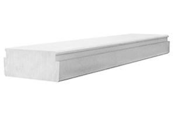

Брускові перемички з газобетону AEROC рекомендується
використовувати при перекритті дверних і віконних проємів. Вони є кращою альтернативою
залізобетонних перемичок, оскільки є теплішими і легшими. Технічні характеристики: Cередня
щільність — 400 кг/м³.
Міцність на стиск бетону — C2,5.
...

Плити перекриття
Плити перекриття AEROC — це армовані вироби у формі паралелепіпеда
з пазами з ніздрюватого бетону щільністю D500 і міцністю В 2,5, які застосовуються при
зведенні перекриттів і покриттів в якості несучого, теплоізолюючого і вогнестійкого
елемента. Технічні характеристики: Cередня щільність...
Плити покриття
Плити покриття AEROC — це армовані вироби у формі паралелепіпеда з
пазами з ніздрюватого бетону щільністю D500 і міцністю С2,5, які застосовують при
спорудженні даху - як плоского, так і двосхилого, а також в якості перекриття між поверхом і
неексплуатованим горищним приміщенням. Технічні харак...
Газобетонні армовані вироби
Армовані вироби з газобетону AEROC — це монолітні вироби, додатково посилені
прутами арматури. Такі вироби застосовуються в місцях підвищеної важливості, де багато людей до
сих пір використовують залізобетонні вироби або інші матеріали з низькими теплоізоляційними
властивостями. До армованих виробів з пористого бетону автоклавного твердіння відносяться:
брускові перемички, плити перекриття і плити покриття.
Перемички з газобетону
Брускові перемички – це монолітний виріб з газобетону щільністю 400 кг/м³.
Завдяки арматурному каркасу, розташованому в середині перемички, клас міцності на стиск бетону
становить С2,5, що відповідає 2,5 ньютона на мм 2. Це повністю виключає деформацію в процесі її
експлуатації в якості віконної або дверної перемички.
Переваги газобетонної перемички над бетонною полягає не тільки в меншій її
вазі, а й в значно меншій теплопровідності, при цьому трохи поступаючись по міцності.
Крім цього, перемички з газобетону представлені вже в якості готового
виробу. Для їх монтажу Вам не знадобиться витрачати час для зведення опалубки, в’язки арматури і
приготування піщано-цементного розчину.
Для монтажу перемички з газобетону AEROC досить покрити місце установки
клеєм для газобетону і встановити перемичку в віконний або дверний проріз. Варто врахувати той
факт, що перемичка повинна спиратися на стіну з газобетону не менше ніж на 250-300 мм, а її
положення повинно відповідати стрілкам розташованим вгору.
Плити перекриття з газобетону
Плити перекриття з автоклавного газобетону здатні повністю замінити бетонні
плити або деревину, яка застосовується в якості міжповерхового перекриття. Такі плити
виготовлені з газобетону щільністю D500 і містять в собі каркас з арматурних прутів, що
забезпечує міцність конструкції С2,5.
Переваги плит перекриття полягають в їх тепло- і звукоізолюючих
властивостях, які значно перевищують показники аналогів. Такі плити мають високу вогнестійкість,
відносно невелику вагу, а завдяки спеціальним пазам, вони без зайвих зусиль стикуються між
собою.
Плити покриття з газобетону
Плити покриття є відносно новим продуктом на будівельному ринку України.
Покриття даху з газобетонних плит відмінно зберігає тепло в середині будинку і не дозволяє
проникати холоду ззовні. Їх виробляють з газобетону щільністю 500 кг/м³, а доступне навантаження
становить 3 кПа.
Універсальна консрукція і система “паз-гребінь” дозволяє використовувати
плити покриття AEROC, як при зведенні плоского, так і двохилового даху.